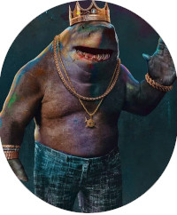

Tubarão Rei
Quem é ele?
Tubarão-Rei (Nanaue) é um personagem fictício do Universo DC e um dos grandes inimigos do super-herói Aquaman. Ele foi criado por Karl Kesen e publicado pela DC Comics. O personagem apareceu brevemente na edição #0 do volume 4 do Superboy. Uma segunda aparição mais longa dele, foi vista na edição #9.
O Tubarão-Rei faz parte da Sociedade Secreta de Supervilões, o Esquadrão Suicida e o Sexteto Secreto. Nanaue é um humanóide-tubarão que nasceu através do seu pai, o Tubarão-Deus.